행사개요
행 사 명 : 제6회 박태준미래전략연구 포럼
주 제 : 더 나은 한국사회의 길을 찾아 - 막힌 사회와 그 비상구들
기 간 : 2019년 2월 13일(수) 14:00 ~17:30
장 소 : 국회의원회관 제3세미나실
프로그램
12019-02-13
| 시간 | 프로그램 |
|---|---|
| 14:00~14:15 | 개회사 : 김승환 포스텍 박태준미래전략연구소장 환영사 : 박 진 국회미래연구원장 축 사 : 박명재(자유한국당) ․ 이원욱(더불어민주당) 국회의원 |
| Session I. 좌장 : 전상인 교수 (서울대) | |
| 14:00~14:30 | 발제 I. 한준 교수 (연세대) 계층갈등 - 한국 사회의 계층 양극화 |
| 14:30 ~ 14:45 | 발제 II. 김원섭 교수 (고려대) 노동자 갈등 - 한국 노동사회의 갈등 - 내부자. 외부자의 복지정치 |
| 14:45 ~ 15:00 | 발제 III. 김왕배 교수 (연세대) 세대 갈등 - 세대 갈등과 인정투쟁 |
| 15:00 ~ 15:20 | 토론 : 정영훈 국회미래연구원 연구위원 민보경 국회미래연구원 부연구위원 |
| Session Ⅱ. 좌장: 김병연 교수(서울대) | |
| 15: 40 ~15:55 | 발제Ⅳ. 배은경 교수(서울대) 젠더 갈등 - 한국사회의 젠더와 젠더갈등 |
| 15:55 ~ 16:10 | 발제Ⅴ. 강원택 교수(서울대) 이념갈등 - 더 나은 한국 사회를 위한 분절 문제와 해소 방안 |
| 16:10 ~ 16:25 | 발제Ⅵ. 방민호 교수(서울대) 가치 갈등 - 한국의 물질주의에 관하여 |
| 16:25 ~ 16:40 | 토론 : 박성원 국회미래연구원 연구위원, 이채정 국회미래연구원 부연구위원 |
| 16:40 ~ 17:30 | 질의응답 |
| 17:30 | 폐회사 : 김승환 포스텍 박태준미래전략연구소장 |
연사
방민호
서울대학교 국문학과 교수, 문학평론가. 한국문학 연구
서 『이상 문학의 방법론적 독해』 『일제말기 한국문학의 담론과
텍스트』 『한국 전후문학과 세대』 『채만식과 조선적 근대문학의
구상』, 문학평론집 『문학사의 비평적 탐구』 『감각과 언어의 크
레바스』 『행인의 독법』 『문명의 감각』 『납함 아래의 침묵』 『비
평의 도그마를 넘어』, 산문집 『서울문학기행』 『명주』 등 다수.
한 준
연세대학교 사회학과 교수. 저서 『한국 사회의 제도에
대한 신뢰』, 공저 『4차 산업혁명, 일과 경영을 바꾸다』 『대한민
국 시스템, 지속가능한가?』 『초고령 사회, 조직활력을 어떻게 높
일까』, 주요논문 「사회과학에서의 복잡계 연구」 「한국의 사회이
동: 현황과 배경」 「한국인 삶의 질의 사회적 결정요인」 등 다수.
김원섭
고려대학교 사회학과 교수. 주요 연구분야는 복지국
가이론, 동아시아 복지국가론, 노후소득보장론, 노동정책. 주요
논문 「복지국가란 무엇인가?」 「복지국가와 국제정책확산」 「연
금정치에서 관료역할의 재조명」 「우리나라 공적연금의 보편적
중층보장체계로의 재구축 방안에 관한 연구」 등 다수.
김왕배
연세대학교 사회학과 교수. 저서 『도시, 공간, 생활세
계』 『산업사회의 노동과 계급의 재생산』 『감정과 사회』(근간),
공저 『세월호 이후의 사회과학』, 주요논문 「자살과 해체사회」
「호혜경제의 탐색과 전망」 「언어, 감정 집합행동」 등 다수.
배은경
서울대학교 사회학과·여성학협동과정 교수. 저서 『현
대 한국의 인간재생산: 여성, 모성, 가족계획사업』 『여성주의 고
전을 읽는다』, 공저 『‘조국근대화’의 젠더정치: 가족·노동·섹슈
얼리티』 등 다수. 《한국여성학》 《페미니즘연구》 편집장 역임.
강원택
서울대학교 정치외교학부 교수. 저서 『통일 이후의 한
국 민주주의』 『한국 정치론』 『보수 정치는 어떻게 살아남았나』
『한국의 정치 개혁과 민주주의』 등 다수.
참석자
내부 인사: 김도연 포스텍 총장, 박태준미래전략연구소 연구위원
외부 인사: 박명재 국회의원, 이원욱 국회의원, 박진 국회미래연구원장, 민경찬 연세대 명예교수외 다수
대학(원)생 에세이 참가자
내용
박태준미래전략연구소는 우리 사회의 더 나은 내일을 위한 방안에 대하여 연구한 결과를 사회에 전파하고 공유하고자 매년 포럼을 개최해오고 있다.
지난 2월 13일 제6회 박태준미래전략연구 포럼에서는 한국사회가 직면한 여러 갈등문제의 실태를 점검하고 이를 타개할 대안을 모색하는 포럼이 열렸다.
포스텍 박태준미래전략연구소(소장 김승환)와 국회미래연구원(원장 박진)은 ‘더 나은 한국사회의 길을 찾아 - 막힌 사회와 그 비상구들’ 이란 주제로 국가와 사회가 당면한 여러 갈등 문제에 대한 연구 결과를 공유하고 대응 전략을 모색함으로써 더 나은 한국 사회 발전에 기여하기 위해 포럼을 공동주최 하였다. 이 자리에서 연세대학교 한준 교수 등 6명의 갈등 관련 연구자들은 계층 양극화, 정규직-비정규직 차별, 세대 갈등, 젠더 갈등, 이념 갈등 등에 대한 연구 결과를 발표하고 미래연구원 연구진이 열띤 토론을 펼쳤다.
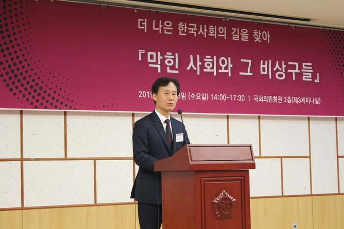
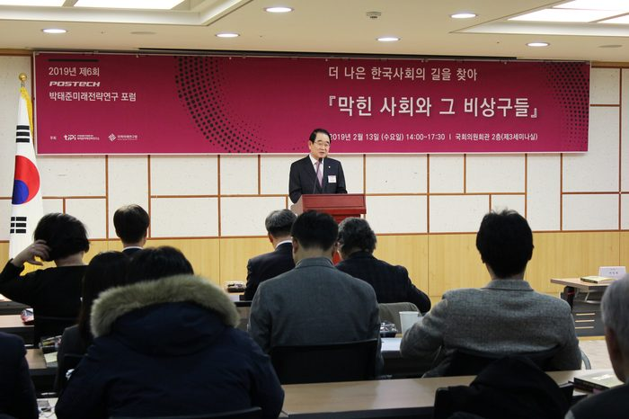
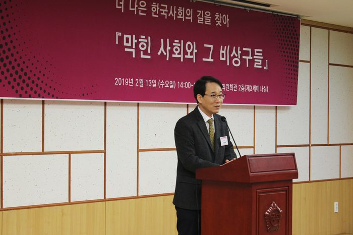
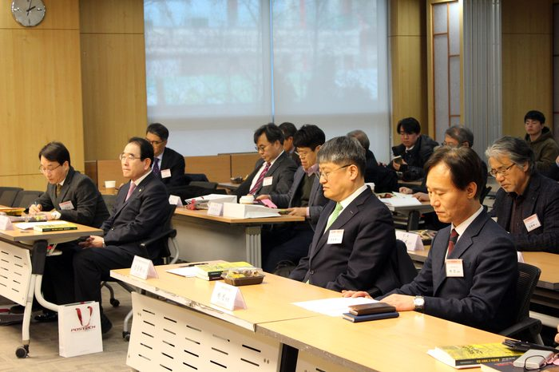
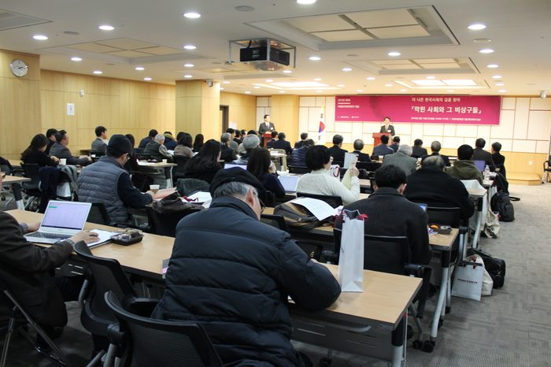
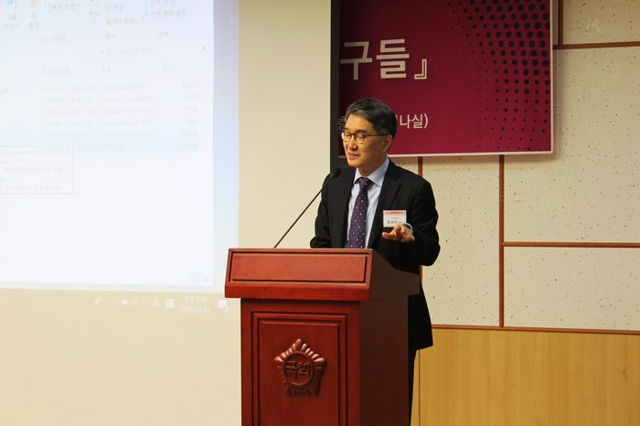
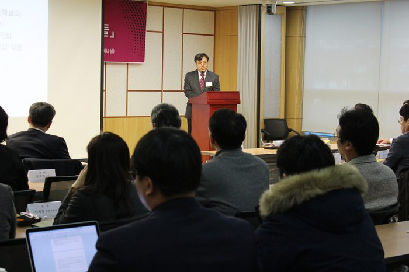
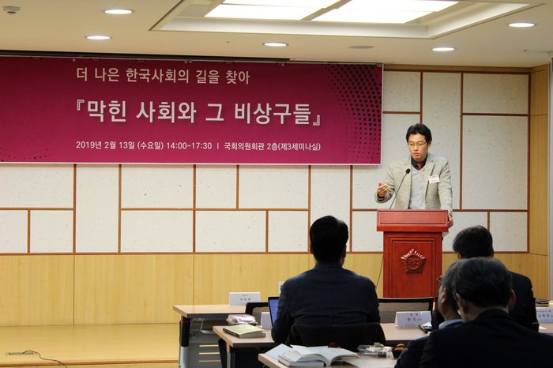
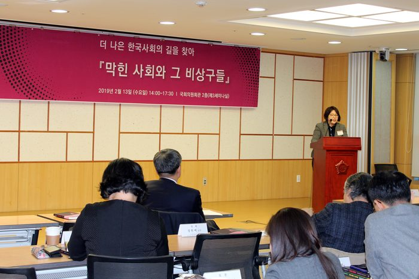
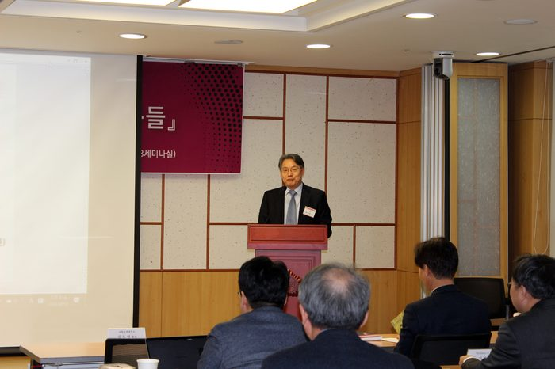
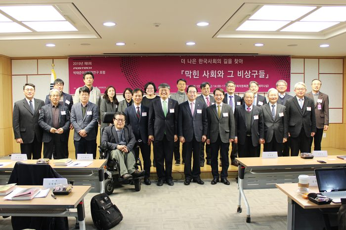